Circulation
Circulation functions can be accessed in several different ways. On the main page of the staff client there are some quick links in the center of the page to check items out, in or transfer them. For a complete listing of Circulation functions you can visit the Circulation page which is linked from the top left of every page or from the center of the main page.
Before circulating your collection you will want to set your Global system preferences, Basic parameters and Patrons and circulation rules.
While in Circulation you can jump between the tabs on the quick search box at the top of the screen by using the following hot keys:
jump to the catalog search with Alt+Q
jump to the checkout with Alt+U
this will not work for Mac users
jump to the checkin with Alt+R
Note
Mac users use the OPTION button in place of ALT
Check out (issuing)
To begin the checkout process you must enter the patron barcode or part of their name. The checkout option appears in three main places:
Check out option on the top of the main staff client
Check out option on the quick search bar on the circulation page

Those two options allow you to search for a patron either by card number, name, user ID, email, etc. If you only have one result, Koha will automatically go to the patron’s file. If your search gives you more than one result, it will ask you to choose which patron you want to check out to.

Note
You can customize the columns of this table in the ‘Table settings’ section of the Administration module- Under Circulation Tab (table id: table_borrowers).
Check out option on the patron record

If you have enabled batch checkouts then click the batch check out option on the patron record

Checking items out
To check an item out to a patron, first search for that patron using one of the many options listed above. You will then be presented with the checkout screen.

If you have chosen to ‘Always show checkouts immediately’ then you will see the list of checkouts below the check out box.

Note
The previousIssuesDefaultSortOrder system preference controls in which order these previous checkouts appear (earliest to latest, or latest to earliest).
Note
You can customize the columns of this table in the ‘Table settings’ section of the Administration module (table id: issues-table).
At the top of the check out screen is a box for you to type or scan the item’s barcode into.
Important
Many modern barcode scanners will send a ‘return’ to the browser, making it so that the ‘Check out’ button is automatically clicked
If the barcode is not found you will be prompted to use fast cataloging to add the item. Learn more about fast cataloging later in this manual.
If you have itemBarcodeFallbackSearch set to ‘Enable’, then you can enter a keyword search in this box instead of just a barcode (this will make it possible to check out using title and/or call number).
If you have AutoSwitchPatron set to ‘Enable’, scanning a patron barcode here will take you to that patron’s file.
To see more checkout options click the ‘Checkout settings’ link to expand the checkout area.

Below the box for the barcode there may be options for you to override the default due date for the item.
This option will only appear if you have set the SpecifyDueDate system preference to allow staff to override the due date
Below the box for the barcode you will see a checkbox for ‘Automatic renewal’. This will allow this item to automatically renew if the appropriate cron job is running and there are no holds on the item.
Next is an option to not decrease the loan length based on holds. This overrides the decreaseLoanHighHolds system preference.
If you’re allowing the checkout of items on site to patrons (these are usually items that are not for loan that you would like to check for in library use) then you will see the ‘On-site checkout’ checkbox after clicking the ‘Checkout settings’ link to expand your circulation options.
At the bottom of the page there is a summary of the patron’s current checked out items along with the due date (and time if the item is an hourly loan). Items checked out today will appear at the top.
Note
Items that are hourly loan items will include the time with the due date.

If you checked out an item for on site use you will see that highlighted in red in the checkout summary.
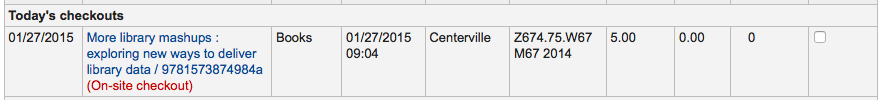
Note
The todaysIssuesDefaultSortOrder system preference controls in which order these new checkouts appear (earliest to latest, or latest to earliest).
The ‘Export’ button at the top of the table allows you to export the patron’s current checkouts in either Microsoft Excel or CSV format, or even copy or print their checkouts.

Also at the bottom of the page is the list of items the patron has on hold.

If you have the SuspendHoldsIntranet system preference set to ‘allow’, you can suspend or resume patrons holds using the options at the bottom of the holds list .
Note
If you have your AutoResumeSuspendedHolds system preference set to “Don’t allow”, you will not have the option to put an end date on the hold suspension
If there are notes on the patron record these will appear to the right of the checkout box

If the patron has a hold waiting at the library, that too will appear to the right of the check out box making it easy for the circulation staff to see that there is another item to give to the patron.

The details of the checkouts will appear on the record detail page in the staff client as well.

Printing receipts
Once you have checked out all of the items for the patron you can print them a receipt by choosing one of two methods.
If you have the CircAutoPrintQuickSlip preference set to ‘open a print quick slip window’ you can simply hit enter on your keyboard or scan a blank piece of paper with your barcode scanner. The idea being that you’re “checking out” a blank barcode which triggers Koha to print the ‘Quick slip.’
You can also click the Print button at the top of the screen and choose ‘Print slip’ or ‘Print quick slip’.

If you choose ‘Print slip’ it will print all of the items the patron has checked out, including those they checked out at an earlier date. Choosing ‘Print quick slip’ will print only the items that were checked out today.
‘Print summary’ will generate a full page summary for the patron’s circulation information and ‘Print overdues’ will print out a slip that lists all items that are overdue.
‘Print checkin slip’ will print out a slip that lists items that were checked in today.
What prints on the slips can be customized by altering the slip templates under the Notices & slips tool.
Clear patron information
When you’re done checking an item out if you have the DisplayClearScreenButton preference set to ‘Show’ you can clear the current patron by clicking the X in the top right of the patron’s info to remove the current patron from the screen and start over.

If you have the CircAutoPrintQuickSlip preference set to ‘clear the screen’ then you simply need to hit enter or scan a blank barcode and the screen will be cleared of the current patron.
Batch checkouts
If you would like to perform a batch check out you can do so by turning on the BatchCheckouts system preference and assigning the proper patron categories via the BatchCheckoutsValidCategories preference. This will allow you to use an RFID pad that reads multiple barcodes or perform a batch check out for training internal use.
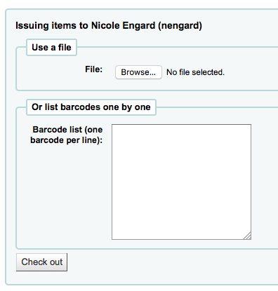
From this screen you can scan several barcodes or load a file of barcodes. If those items cannot be checked out they will provide a warning on the following screen.
If you have the SpecifyDueDate system preference enabled you will have the option to set a due date for the checkouts.
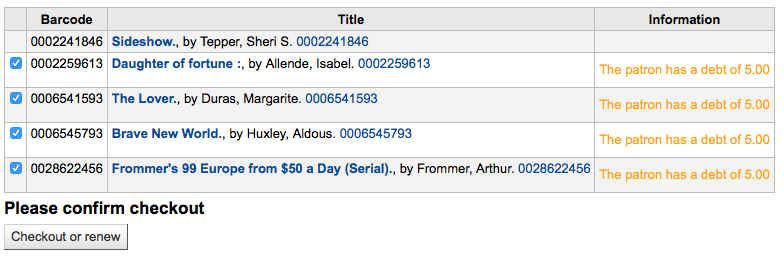
If you are using a statistical patron type then you’ll see that local use was recorded for each item you scanned.

Check out messages
If you check out an item that has multiple pieces and you have cataloged that information in subfield 3 of the item record (in MARC21) a message will pop up when you check out that item telling you how many pieces should be there.

There are times when Koha will prevent the librarian from being able to check out items to a patron. When this happens a warning will appear notifying the librarian of why the patron cannot check items out.
Patron owes too much in fines

You can set the amount at which patron checkouts are blocked with the noissuescharge system preference
Patron has a restriction on their account

This can be set by the librarian editing a patron record and adding a restriction or by the Overdue/Notice Status Triggers
If the staff member has the right permission they can override the restriction temporarily

Patron needs to confirm their address
This can be set by the librarian editing a patron record and adding a flag
Patrons has lost their library card

This can be set by the librarian editing a patron record and adding a flag
Check out warnings
Sometimes checkouts will trigger warning messages that will appear in a yellow box above the check out field. These warnings need to be acknowledged before you will be able to continue checking items out.
Patron has outstanding fines

Item on hold for someone else

Item should be on the hold shelf waiting for someone else

Item already checked out to this patron

Item checked out to another patron

This warning will allow you to place a hold on the item for the patron you’re trying to check it out to.
Item not for loan

Patron has too many things checked out and AllowTooManyOverride is set to ‘Allow’

Patron has too many things checked out and AllowTooManyOverride is set to “Don’t allow”

Item cannot be renewed

This can be overridden with the AllowRenewalLimitOverride system preference
Barcode not found

Learn more about fast cataloging later in this manual.
Item being checked out is marked as ‘lost’
Depending on the value in your IssueLostItem preference, you may just see a warning

or a confirmation box

Item being checked out is not recommended for a patron of this age

Item being checked out meets the decreaseLoanHighHolds system preference criteria

Item has accompanying material (field 952$3, ‘Materials specified’, is filled)

If CircConfirmItemParts is set to ‘Require’, the staff member will have to confirm the checkout

Renewing
Checked out items can be renewed (checked out for another period of time) based on your circulation rules and renewal preferences.
If you allow it, patrons can renew their own items via the OPAC, but sometimes you’ll need to help them by renewing their items via the staff client.
To renew items checked out to a patron, you can do one of two things.
The first is to visit their details page or checkout page and review their checkout summary at the bottom.

In the Renew column you will see how many times each item has been renewed and a checkbox to renew the item for the patron. Check the box of the items you would like to renew and click the ‘Renew or return checked items’ button, or to renew all items checked out to the patron simply click the ‘Renew all’ button.

Sometimes renewals will be blocked based on your circulation rules, to override this block you must have your AllowRenewalLimitOverride preference set to ‘Allow’. If you allow renewal limit overrides, you will see a checkbox at the bottom left of the circulation summary. Check that box and then choose the items you would like to renew.

Checking that box will add checkboxes in the renew column above where before the item was not renewable.
You can also mark a renewal as ‘unseen’, to differenciate between renewals where staff has actually seen the item, versus renewals where they didn’t see it (over the phone, for example). To do this, you must first enable the UnseenRenewals system preference. Once enabled, a checkbox will appear at the bottom left of the circulation summary. Check that box to mark the renewals as ‘unseen’. Then click either ‘Renew or check in selected items’ or ‘Renew all’.
The second option is to visit the ‘Renew’ page found under the Circulation menu.
And scan the barcodes of the items you would like to renew.

If the item is renewed you will receive a confirmation message.
If the barcode is not found you will be presented with an error.
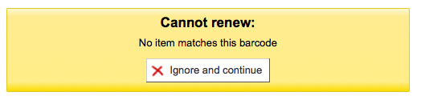
If the item is not actually checked out you will also receive an error.

Check in (returning)
Checking in items can be performed from various different locations
The check in box on the top of the main staff client

The check in option on the quick search bar on the Circulation page

The check in link on the patron’s checkout summary (and on the checkout summary page)

The Check in page under the Circulation menu

Koha also offers an automatic checkin feature, which can be set in item types.
Checking items in
To check an item in scan the barcode for the item into the box provided. A summary of all items checked in will appear below the checkin box

Note
You can customize the columns of this table in the ‘Table settings’ section of the Administration module (table id: checkedintable).
If you are checking items in that were put in the book drop while the library was closed you can check the ‘Book drop mode’ box before scanning items. This will effectively roll back the returned date to the last date the library was open.
This requires that you have your closings added to the calendar tool
You can also choose to forgive all overdue charges for items you are checking in by checking the ‘Forgive overdue charges’ box before scanning items.
If you have the SpecifyReturnDate preference set to ‘Allow’ you will be able to arbitrarily set the return date from below the check in box.

Check in messages
There are several messages that can appear when checking items in:
If you are checking an item in at a library other than the home branch, a message will appear asking you to transfer the book to the home library

After this item is checked in the status of the item will be changed in the catalog to ‘in transit’

To mark an item as back at the home branch, check the item in at the home branch
A message will appear tell you that the item is not checked out, but the status will now say available in the catalog. This step is necessary to mark items as received by the home branch.
If you are checking in an item that should have multiple parts or pieces a message will appear warning you about the number of pieces you should have in your hand
If CircConfirmItemParts is set to ‘Require’, the staff member will have to confirm the checkin

If you’re checking an item in that has a hold on it, you will be prompted to confirm the hold

Clicking the Confirm hold button will mark the item as waiting for pickup from the library

Clicking the ‘Print slip and confirm’ button will mark the item as waiting for pickup at the library and present the library with a receipt to print and place on the book with the patron’s information
Ignoring the hold will leave the item on hold, but leave its status as Available (it will not cancel the hold)
If you’re checking in an item that has a hold on it at another branch you will be prompted to confirm and transfer the item

Clicking the ‘Confirm hold and transfer’ button will mark the item as in transit to the library where the hold was placed

Clicking the ‘Print slip, transfer and confirm’ button will mark the item as in transit to the library where the hold was placed and present the library with a receipt to print and place on the book with the patron’s information
Ignoring the hold will leave the item on hold, but leave its status as Available (it will not cancel the hold)
If you have the system showing you fines at the time of checkin (FineNotifyAtCheckin) you will see a message telling you about the fine and providing you a link to the payment page for that patron

Circulation messages
Circulation messages are short messages that librarians can leave for their patrons or their colleagues that will appear at the time of circulation.
Setting up messages
Circulation messages are set up as authorized values. To add or edit circulation messages you want to work with the BOR_NOTES value.

The ‘Description’ field can hold a canned message that you would like to appear on the patron’s record.
Important
The ‘Description’ field is limited to 80 characters, but the patron message field can hold more than that. Enter 80 characters in the ‘Description’ field and then type the rest on the patron record.
Adding a message
When on the patron’s check out tab you will see a link to ‘Add a new message’ to the right of the check out box and a button at the top to ‘Add message’.
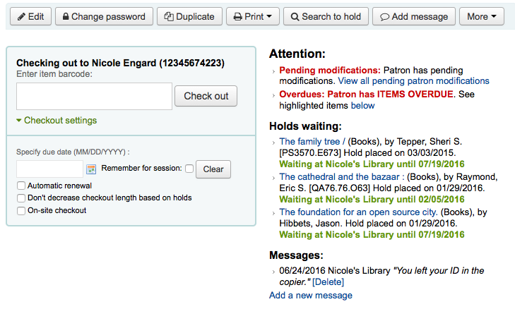
When you click either of these options you will be asked to choose if the message is for the librarians or the patron and the message you would like to leave.

Note
A message for the patron will also show to the library staff.
Viewing messages
Circulation messages meant for the staff and/or the patron will appear on the patron’s checkout screen to the right of the checkout box. Messages in bold and red are meant for the library staff only, whereas messages in regular italics font are meant for the patron and the librarian.
Circulation messages meant for the patron will also appear when they log into the OPAC.

Holds
Koha allows patrons to put things on hold. A ‘Hold’ is a way to reserve an item. Depending on your circulation and fines rules and hold preference settings patrons will be able to place items on hold for pickup at the library at a later date/time.
Placing holds in staff client
There are several ways to place holds from the staff client. The most obvious is using the ‘Place hold’ button at the top of any bibliographic record.

You can also click the smaller ‘Place hold’ link found at the top of your catalog search results, or the ‘Holds’ link found below each result.

You will be asked to search for a patron by barcode or any part of their name to start the hold process.

If you’d like to search for the patron first and then the bib record for the hold, you can open the patron record and click on the ‘Search to Hold’ button at the top of the patron record.
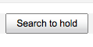
After clicking the button you will be brought to the catalog search page where you can find the book(s) you want to place a hold on. Under each title on the results you’ll see an option to ‘Hold for Patron Name.’

If you want to place a hold on multiple items, simply check the boxes to the left of them and click the arrow to the right of the ‘Place Hold’ button.
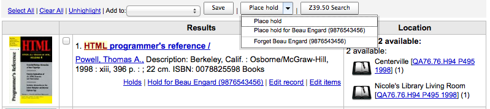
Depending on how many items you choose to place a hold on at once you will see a different place hold form. If you are placing a hold on one bibliographic record you will see a list of all of the items you can place a hold on.

Enter any notes that might apply to this hold
Choose the library where the patron will pick up the item
If you have the AllowHoldItemTypeSelection preference set to ‘Allow’ and the record had more than one item type attached you will see an option to choose to limit the hold to a specific item type

If the patron wants the hold to start on a date other than today, enter that in the ‘Hold starts on date’ field
This option will only appear if the AllowHoldDateInFuture system preference is set to ‘Allow’
If the patron has specified that they don’t want the item after a certain date, or if you have limits on hold lengths, you can enter an expiration date for the hold in the ‘Hold expires on date’
To have expired holds cancelled automatically you will need to have the Expired holds cron job set to run on a regular basis.
Next choose if you want to place a hold on the next available item or a specific item by clicking the radio button next to an individual item.
If you are placing a hold for internal purposes, such as checking for missing pages or needing to add a sticker, you can place a ‘non-priority’ hold. This type of hold will not prevent the patron who currently has the item to renew their checkout.
If you’re placing a hold on multiple items you will be presented with the next available option for all titles. If no items are available for hold it will say so on the confirmation screen.
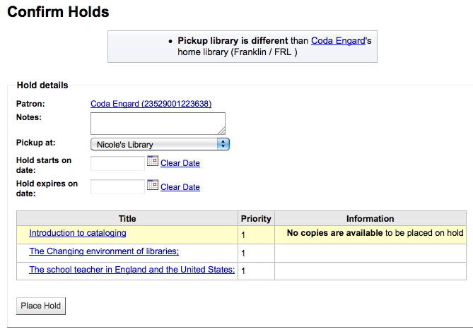
Once your hold is placed, if you’d like to have Koha forget that you used the ‘Search to hold’ function, you can choose to have Koha ‘forget’ the patron’s name by clicking the arrow to the right of the ‘Place hold’ button on the search results and choosing the ‘Forget’ option.

Managing holds
Holds can be altered and cancelled from the holds tab found on the left of the bibliographic record.
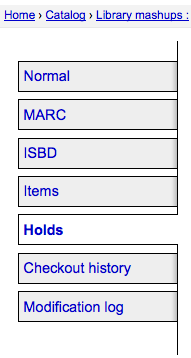
From the list of holds you can change the order of the holds, the pickup location, suspend and/or cancel the hold.
Note
If you have your AutoResumeSuspendedHolds preference set to “Don’t allow” then you will not have the option to put an end date on the hold suspension.
Note
If you have your AllowHoldDateInFuture preference set to “Don’t allow” you will not have the option to edit the date the hold was placed (the column labelled Date).
Note
If you have the HoldsSplitQueue system preference set you will see the holds list split across different tables by either pickup library, itemtype or both.
Note
Depending on how you have your HidePatronName system preference set the list may show card numbers instead of names in the patron column like in the image above.
To rearrange or delete holds, simply make a selection from the ‘Priority’ pull down or click the arrows to the right of the priority pull down.

If you use the priority pull down to rearrange or delete holds you will need to click the ‘Update hold(s)’ button to save your changes.
Clicking the down arrow to the right of the hold will stick the hold at the bottom of the list even if more requests are made.
For example, your library has home-bound patrons that are allowed to keep books out for months at a time. It would not be fair to other patrons if a home-bound patron were able to check out a brand new book and keep it for months. For this reason, the home-bound patron’s hold request would stay at the bottom of the queue until everyone else who wanted to read that book has already done so.

If a patron asks to have their hold suspended and you have the SuspendHoldsIntranet system preference set to ‘allow’ you can do so by clicking the ‘Suspend’ button to far right. If the patron gives you a date for the items to become unsuspended you can enter that in the date box and click the ‘Update hold(s)’ button to save your changes.

To delete or cancel a hold click the red ‘X’ to the right of the hold line. To delete/cancel a bunch of holds you can choose ‘del’ from pull down to the left of each line and then click ‘Update hold(s)’ at the bottom of the list.

If your library uses the patron clubs feature, use the clubs tab to place a hold for a club. To place a hold for a club, click the clubs tab, search for and select the club name, and click the ‘Place hold’ button.
Receiving holds
When items that are on hold are checked in or out the system will remind the circulation librarian that the item is on hold and offer them options for managing the hold.
When you check in an item that has a hold on it the system will ask you to either confirm and transfer the item
or just confirm the hold

Clicking the ‘Confirm’ button will mark the item as on hold for the patron. If the item needs to be transferred the item will also be marked as in transit to the proper branch. Clicking ‘Ignore’ will retain the hold, but allow you to check the item out to another patron. Choosing to confirm and print will present you with a printable page that you can slip inside the book with the necessary hold and/or transfer information.
Once confirmed the hold will show on the patron record and on the checkout screen under the ‘Hold’ tab.
From here if the patron would like you suspend their holds you can do so one by one or in bulk.
The item record will also show that the item is on hold.

In some cases a patron may come in to pick up a hold on behalf of someone else. In this case you want to make sure that the hold is cancelled when you check the item out to someone else. Alternatively a check out might be attempted in error for an item that is already waiting for someone else. In this case you will be presented with a warning message.

From here you can check the item out to the patron at the desk and cancel the hold for the patron. If the hold should remain in place you can choose not to check out.
If you try to check in an item that already waiting on the hold shelf you will be presented with the following message.
From here you can click on ‘Confirm hold’ to keep the existing hold or use the ‘Cancel hold’ option to remove the hold. If you cancel the hold and further holds exist for the item you will be presented with a new option to confirm the hold for the next patron.
Transfers
If you work in a multi-branch system you can transfer items from one library to another by using the Transfer tool.
Get there: Circulation > Transfer
To transfer an item
Click ‘Transfer’ on the Circulation page

Enter the library you would like to transfer the item to
Scan or type the barcode on the item you would like to transfer
Click ‘Submit’

The item will now say that it is in transit

When the item arrives at the other branch the librarian must check the item in to acknowledge that it is no longer in transit
The item will not be permanently moved to the new library

The item shows the same ‘Home library’ but has updated the ‘Current location’ to note where it resides at this time
Set library
By default you will enter the staff client as if you are at your home library. This library will appear in the top right of the staff client.

This is the library that all circulation transactions will take place at. If you are at another library (or on a bookmobile) you will want to set your library before you start circulating items. To do this you can click ‘Set’ at the top right or on the Circulation page.

Once you have saved your changes you new library will appear in the top right.
Fast add cataloging
Sometimes circulation librarians need to quickly add a record to the system for an item they are about to check out. This is called ‘Fast add’. To allow circulation librarians access to the Fast add cataloging tool, simply make sure they have the fast_cataloging permissions. There are two ways to add titles via fast add. If you know that you’re about to check out an item that isn’t in you catalog you can go to the Circulation module and click ‘Fast cataloging.’

The cataloging interface will open up with the short cataloging record:

After adding your cataloging data you will be asked to enter item data. Enter the items barcode, collection code, etc and save the item before checking it out.
The other way to fast catalog is from the checkout screen. When you enter a barcode at checkout that Koha can’t find, it will prompt you to use fast cataloging to add the item to Koha and check it out.
Clicking ‘Fast cataloging’ will bring you to the fast cataloging form where you can enter the title information

After clicking ‘Save’ you will be brought to the item record where the barcode will already be filled in with the barcode you’re trying to check out.

After clicking the ‘Add item’ button the item will automatically be checked out the patron you were trying to check the book out to originally.

Circulation reports
Most reports can be found via the Reports module, but some of the more common circulation reports are available right from the Circulation module.
Get there: Circulation > Circulation reports
Holds queue
This report will show you all holds waiting to be pulled off the shelf at your library.

Note
You can customize the columns of this table in the ‘Table settings’ section of the Administration module (table id: holds-table).
To generate this report, you must have the Build holds queue cron job running. This cron job is a script that should be run periodically if your library system allows borrowers to place on-shelf holds. This script decides which library should be responsible for fulfilling a given hold request.
It’s behavior is controlled by the system preferences StaticHoldsQueueWeight, RandomizeHoldsQueueWeight and UseTransportCostMatrix.
If you do not want all of your libraries to participate in the on-shelf holds fulfillment process, you should list the libraries that *do* participate in the process here by inputting all the participating library’s branchcodes, separated by commas ( e.g. “MPL,CPL,SPL,BML” etc. ).
By default, the holds queue will be generated such that the system will first attempt to hold fulfillment using items already at the pickup library if possible. If there are no items available at the pickup library to fill a hold, build_holds_queue.pl will then use the list of libraries defined in StaticHoldsQueueWeight. If RandomizeHoldsQueueWeight is disabled (which it is by default), the script will assign fulfillment requests in the order the branches are placed in the StaticHoldsQueueWeight system preference.
For example, if your system has three libraries, of varying sizes ( small, medium and large) and you want the burden of holds fulfillment to be on larger libraries before smaller libraries, you would want StaticHoldsQueueWeight to look something like “LRG,MED,SML”.
If you want the burden of holds fulfillment to be spread out equally throughout your library system, simply enable RandomizeHoldsQueueWeight. When this system preference is enabled, the order in which libraries will be requested to fulfill an on-shelf hold will be randomized each time the list is regenerated.
An alternative to static and randomized is using the Tansport cost matrix. It takes precedence in controlling where holds are filled from and allows you to define the ‘cost’ of transport between any two libraries. To use the Transport cost matrix simply set your UseTransportCostMatrix preference to ‘Use’.
Holds to pull
This report will show you all of the items that have holds on them that are available at the library for pulling. If the items are available at multiple libraries then all libraries with that item available will see the hold to pull until one library triggers the hold.
If enabled, clicking the Mark item as lost button will mark item as lost and notify the requesting patron depending on the value of the CanMarkHoldsToPullAsLost system preference.

Note
You can customize the columns of this table in the ‘Table settings’ section of the Administration module (table id: holds-to-pull).
You can choose which LOST value to set the item to with the UpdateItemWhenLostFromHoldList system preference.
You can limit the results you see by using the Refine box on the left side of the page:

Holds awaiting pickup
This report will show all of the holds that are waiting for patrons to pick them up.

Note
You can customize the columns of this table in the ‘Table settings’ section of the Administration module (table id: holdst).
Items that have been on the hold shelf longer than you normally allow (based on the ReservesMaxPickUpDelay preference value) will appear on the ‘Holds over’ tab, they will not automatically be cancelled unless you have set the cron job to do that for you, but you can cancel all holds using the button at the top of the list.
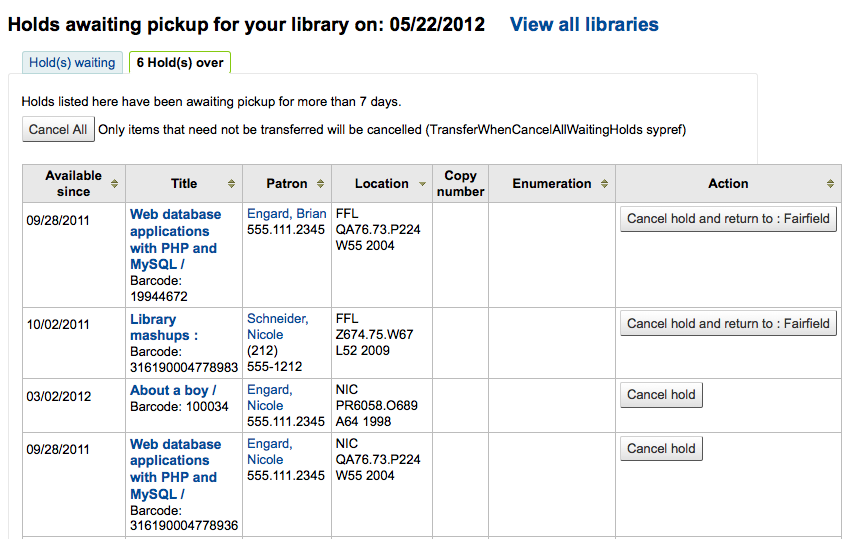
Note
You can customize the columns of this table in the ‘Table settings’ section of the Administration module (table id: holdso).
Hold ratios
Hold ratios help with collection development. Using this report you will be able to see how many of your patrons have holds on items and whether you should buy more. By default it will be set to the library needing 3 items per hold that has been placed. The report will tell you how many additional items need to be purchased to meet this quota.

Note
You can customize the columns of this table in the ‘Table settings’ section of the Administration module (table id: holds-ratios).
Transfers to receive
This report will list all of the items that Koha thinks are in transit to your library.

If your transfers are late in arriving at your library you will see a message stating how late your items are.
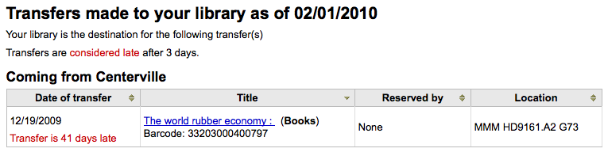
Important
An item is considered late based on the number of days you have entered in the TransfersMaxDaysWarning system preference.
Article requests
Article requests are somewhat similar to holds, but are not requests for an item to check out. Instead, article requests are requests for a photocopy of a particular section of a book or an article from a serial issue. This is very common in academic libraries where researchers may request a copy of a single article found in a journal.
Setting up article requests
First, enable your system preference for ArticleRequests.
Set to ‘Enable’ patrons to place article requests.
Next you will need to decide how your patrons will make requests, either record only, item only, or both record and item level.
You can set 3 different system preferences for mandatory fields to be filled in depending on how your records are requested.
ArticleRequestsMandatoryFields: make the following fields mandatory for records that are record level or item level requestable
ArticleRequestsMandatoryFieldsItemsOnly make the following fields mandatory for records that are only item level requestable
ArticleRequestsMandatoryFieldsRecordOnly make the following fields mandatory for records that are only record level requestable
Next you will want to go into your circulation and fines rules matrix and select each rule for which you want to allow requests.
You can allow requests to be made at the record level, item level, yes (which means both) and no (which means no article requests may be placed).
You can also limit the number of open article requests a patron can have at one time by patron category in the Default open article requests limit section of the circulation rules page.
You can set up a fee for each article request in the Default article request fees section of the circulation rules page.
Placing article requests
Now you can place requests on both the staff client and OPAC.
In the staff client, on the record details page, you will see a ‘Request article’ button at the top and an ‘Article requests’ tab to the left. The two options lead to the same page.
Just like a hold, you will be prompted to enter the patron’s card number or name.

Fill in the form.
Note
Remember, the mandatory fields are set through the three system preferences ArticleRequestsMandatoryFields, ArticleRequestsMandatoryFieldsItemsOnly, and ArticleRequestsMandatoryFieldsRecordOnly.
If there is a fee, a message will appear to inform the staff member.

If allowed, choose the specific item to request.
Then, click on ‘Place request’.
From the OPAC, patrons can place requests themselves either from the results list

or by going to the detailed record.
As with a hold, if the patron is not logged in, they will be asked to do so.
The form is the same as the one in the staff interface.

If there is a fee, a message will appear to inform the patron.

If allowed, the patron can choose the specific item to request.
From their account, the patron will be able to follow the progress of their request from ‘new’

to ‘pending’, if necessary,
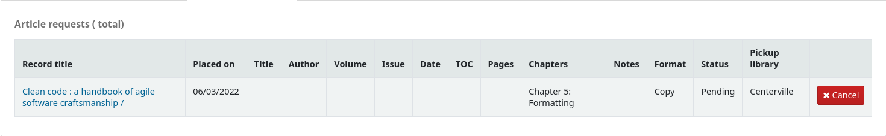
to ‘processing’.

The patron will also receive an email notification when the status of the request changes.
Once the request is completed the patron will receive an email notification and the article request will no longer appear in their account.
Email notifications can be customized in notices and slips.
Managing article requests
Once the article request has been placed, staff will see new requests at the bottom of the home page on the staff client. (In the same location as tags, comments and modifications).

From there staff will be able to select requests to process.

New requests are in the ‘New’ tab.
The first step would be for a staff member to process the request, that moves the request to the processing tab and alerts other staff members that the request is in process. In the actions column, click on the dropdown menu and select ‘Process request’. This will move the request to the processing tab.

If for any reason, a request cannot be processed right away (for example, if the title is currently checked out), the status can be changed to ‘Pending’. This will send a notice to the patron indicating the request has been received and seen, but has yet to be processed.
Next staff will go to the shelf and make a copy of the requested article.
Once that is complete, staff can print the article request slip (this can be customized in notices and slips under AR_SLIP) and staple or paper clip it to the article. In the actions column, you can select the dropdown and select print slip.
Finally, staff will select the complete article request from the actions dropdown menu which will send a notice to the patron who made the request letting them know the request is ready for pickup.
This removes the article request from the processing tab.
Note
Actions can also be made in bulk by checking the boxes next to the requests to process or by clicking ‘Select all’, and choosing the new status from the actions menu on top of the table.

Overdues
This report will list all items that are overdue at your library.
警告
For libraries with a large patron base, this report may take a significant amount of time to run.
Large libraries can choose to filter the report before it runs by setting the FilterBeforeOverdueReport system preference to ‘Require’.

注解
You can customize the columns of this table in the ‘Table settings’ section of the Administration module (table id: circ-overdues).
The report can be filtered using the menu options found on the left of the report.
注解
The ‘Show any items currently checked out’ checkbox basically switches this from a report of overdues to a report of checkouts. It will show all titles checked out regardless of due date.
The report result can be downloaded via the ‘Download file of displayed overdues’ link or the ‘Export’ button at the top of the table.
Overdues with fines
This report will show you any overdues at your library that have accrued fines on them.

If you would like to limit the report you can use the pull down menu at the top to limit to a specific shelving location at your branch. To see overdues with fines at other branches you will have to change your branch or log in at that branch.
Important
If you do not charge fines and/or don’t have the fines cron job running you will see no data on this report.
Pending on-site checkouts
If you are using the on site checkouts functionality (OnSiteCheckouts) then you’ll have a report to view all items that are currently checked out on site.

This will list the due date (overdues in red), who has the item, item information and what library the item is at.
Tracking in-house use
Many libraries track the use of items within the library.
Note
This is different from tracking on-site usage. In-house use is the use of items in the library by patrons without them having to check them out. On-site use is the use of items on site that must first be checked out. To learn more about on site usage please review the OnSiteCheckouts preference.
Tracking the use of items in the library without checking them out can be done in Koha one of two ways. The first is to create one or more Statistical Patrons. When collecting items that have been used within the library, you will want to check them out to your statistical patron:

Instead of marking the item as ‘checked out’ the system will record that the item was used in house:

Repeat these steps for all items that have been used within the library to keep accurate statistics for item use.
The other way to record local use of items is to set your RecordLocalUseOnReturn preference to ‘Record.’ Then whenever you check an item in that is not checked out and not on hold a local use will be recorded.

Note
If you have RecordLocalUseOnReturn set to ‘Record’ you can still use your statistical patrons to record local use as well.
Self checkout
Koha comes with a very basic self checkout module. To enable this module you need to set the WebBasedSelfCheck system preference to ‘Enable.’ To use this module you have to log in as a staff member with self_check permissions.
Note
Create a staff patron specifically for this action so that you don’t leave a real staff client logged into a computer all day
There is no link to the Self checkout module, but a simple addition to the OPACUserJS system preference can add one.
$(document).ready(function(){
$("#login .btn").parent().after("<p><a href=\"http://YOUR_KOHA_OPAC_URL/cgi-bin/koha/sco/sco-main.pl\" target=\"_blank\">Self-Checkout</a></p>");
});
**Important**
The code above has line breaks added to make it more readable,
please be sure to enter the above as one line in when putting it in
the system preference.
The link will then appear at the bottom of the log in page:

You can also access this module by going to: http://YOUR_KOHA_OPAC_URL/cgi-bin/koha/sco/sco-main.pl
When on the self checkout page, depending on the value in your SelfCheckoutByLogin system preference you will be asked to enter your cardnumber

or your username and password

Once you’re logged in to the self check module you will be asked to scan the items you are checking out

As you scan items they will appear below the barcode box

When you are finished scanning items it is important to click the ‘Finish’ button. This will prompt you to print a receipt and log you out of the self check module.

When attempting to check items out there are some instances where error messages will appear and the patron will be directed to the librarian. This will happen even if you are allowing overrides on circulation functions. Only a librarian can override a circulation block and so patrons must go to the librarian for help in these situations.

Self check-in
In order to use the self check-in module, you must first set the :ref: SelfCheckInModule <selfscheckinmodule-label> system preference to ‘Enable’.
Then, you will have to create a patron with the self_checkin_module permission.
Note
Create a staff patron specifically for this action so that you don’t leave a real staff client logged into a computer all day. You can give this patron only the aforementionned permission so it cannot be used for anything else.
Once this is done, you can head over to the self check-in page: http://YOUR_KOHA_OPAC_URL/cgi-bin/koha/sci/sci-main.pl
Log in with your staff patron with self check-in permissions
Once the computer or kiosk is set and the self check-in user logged in, patrons will be able to check-in their items themselves.
The patron will either scan the item’s barcode, if the computer is attached to a barcode scanner, or type in their item’s barcode in the box and click ‘Add’ or press enter.
Note
Most barcode scanners will automatically hit return after scanning.
Once they have scanned or entered all their items’ barcodes, they can click on the ‘Check-in’ button to return all the items at once.
Important
If the patron doesn’t click the ‘Check-in’ button, the items will not be returned and will stay in their account.
Important
The self check-in module will not warn user if the item is late, if they have fines, if the item is on hold for someone else, or if they have messages in their account.
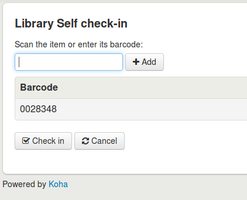
They can then click ‘Finish’ to return to the main self check-in page.

Note
If the patron doesn’t click ‘Finish’, the screen will refresh after the timeout period specified in the SelfCheckInTimeout system preference.
Note
Even if the patron doesn’t click ‘Finish’ the item will still be checked in from their account.
You can cutomize the look of your self check-in screens by using the SelfCheckInUserCSS system preference or the SelfCheckInUserJS system preference.
You can add content, like instructions on how to use the self check-in system for example, by using the SelfCheckInMainUserBlock system preference.
Statistics about the transactions made through the self check-in module are logged into the action_logs table in the Koha database. You can therefore build a custom report to get the statistics you need.
Offline circulation utilities
Koha allows for you to continue circulation actions while offline by using any one of three utilities.
Offline circulation in Koha
If the AllowOfflineCirculation preference is set to ‘Enable’ the library staff can continue to perform circulation actions within Koha when the system is offline. You will want to visit http://your-koha-staff-client-url/cgi-bin/koha/circ/offline.pl at least once while online and bookmark that page. That is the page you will go to when you are offline.
Important
The offline interface uses HTML LocalStorage, which depending on the browser and user setting, is limited to 2.5MB or 5MB per domain. This means that larger systems will not be able to synchronize their data and are recommended to use either the Firefox or Windows application for offline circulation.
Setup
Before the first time the system goes offline go to Circulation and choose ‘Built-in offline circulation interface’

And synchronize your data on every circulation computer by clicking the ‘Synchronize’ link on the right of the screen.

Important
The offline interface uses HTML LocalStorage, which depending on the browser and user setting, is limited to 2.5MB or 5MB per domain. This means that larger systems will not be able to synchronize their data and are recommended to use either the Firefox or Windows application for offline circulation.
This will allow you download a local copy of your patrons and circulation data. Click the ‘Download records’ link at the top of the page to synchronize your data.
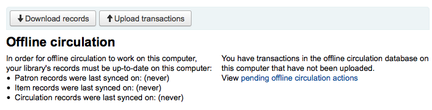
Once your data is downloaded you will see the dates your data was last synced to the right of each data set.

This should be done regularly in preparation for any unexpected connection losses.
Circulating
When your system goes offline visit the Offline Circulation page (http://your-koha-staff-client-url/cgi-bin/koha/circ/offline.pl) in Koha and click ‘Check out’ or ‘Check in’ to perform offline actions.
Checking out is done by searching for the patron by barcode or name at the top of the ‘Check out’ screen. After selecting a patron you will be presented with the synced patron info, including fines and check outs.

Scan the barcode of the item you would like to check out and enter a due date. If you don’t enter a due date Koha will prompt you for one.

Once the item is checked out it will appear below the patron’s info.

Koha offline uploading
Once the system is back online visit the ‘Synchronize’ page on the Offline circulation module and click ‘Upload transactions’
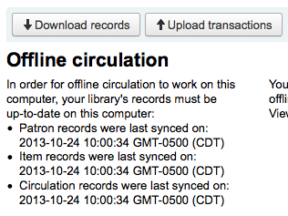
After the files are uploaded you can click ‘View pending offline circulation actions’ on the right.
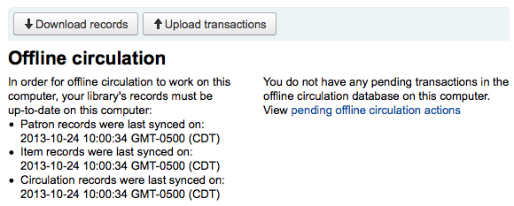
After clicking ‘View pending offline circulation actions’ you will be brought to a summary of all of the actions you loaded in to Koha in your *.koc file.
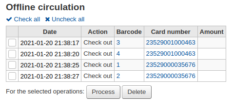
Once all of the logs from all of the circulation computers are loaded you will be able to check them all or select just those you want to process into Koha.
Click on the ‘Process’ button and Koha will record every stored transaction one by one. For each transaction, the status will change to:
“Success.” if the transaction was processed correctly
“Borrower not found.” if the borrower card number is incorrect
“Item not found.” if the item barcode is wrong
“Item not issued.” if you checked in an available item
Once finished you will have a summary of all of your transactions
Firefox plugin
There is an offline circulation tool that you can add to your Firefox browser as an addon. To do so, just go to https://addons.mozilla.org/en/firefox/addon/koct/ page and click on the “install now” button. You may have to confirm the installation, just click on “install now” and then restart Firefox to complete the installation.
Once you have installed the plugin and restarted Firefox, you will see the Koha logo in the download bar at the bottom right of Firefox.
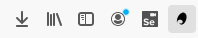
A click on the logo will open the tool in its own window.

The plugin connsists of three sections:
The ‘Check out’ section is where you check out items
The ‘Check in’ section is where you check in items
The ‘Transactions’ section is where you can track the transactions done while in offline mode
The transactions will keep information until you empty it.

If you’d like to clear the transactions, click the ‘Clear’ box before hitting the ‘OK’ button.
The first thing you want to do then is to set up the plugin. Proceed to the settings page, linked in the top right of the page or under ‘Configuration page’ in the Transactions section.

Answer the 5 questions presented:
Server = the URL of the librarian interface
Username = your staff account login
Password = your staff account password
Branch code = the code for the branch where you are located
Commit Type = If you select ‘Send data to Koha’, your account will need to be approved by an administrator. If you select ‘Apply directly to Koha’, your account will not need to be approved.
Important
To save the settings, you will have to close the plugin window and re-open it by clicking again on the Koha logo in the add-on bar.
Note
You can create a staff account dedicated to the offline circulation. So that, no matter who is at the circulation desk, they can all use the same login. Along those lines, you can use a group login that you already have in place for circulation as well.
Once you have everything set up you can start checking items in and out.
Checking out:

Under the ‘Checkout’ heading
Scan the patron barcode
Scan the item barcode
Click ‘Checkout’
Checking in:

Under the ‘Checkin’ heading
Scan the item barcode
Click ‘Checkin’
Each time, you check out or check in an item, a new transaction is recorded in the local plugin database. This is recorded in the Transactions section bellow.

Note
The status will be “Local.” as long as you are offline and don’t process the transactions into Koha.
When your Internet connection comes back up you will want to get these transactions in to Koha. Before processing these transactions you should be aware of a few issues.
Because you are not connected to your Koha database when using this plugin holds will need additional processing. If an item you check in while offline has a hold, the hold is kept on the item. Since, you can’t confirm holds found during the processing of every check in, the holds stay on the item and will need to be managed later. If you only checked in a few items you can just keep a record of them all. If you checked in a lot of items you can use the Holds queue once it rebuilds to see what holds made it to the shelf erroneously.
Similarly, if an patron card was expired, the offline circulation tool won’t know about it, so the checkout will be recorded regardless of the patron’s account being blocked normally.
You have two options for adding this data to Koha
Apply to Koha
If you checked in/out on more than one computer at the same time, what you want is to process every transaction consistently. Let’s say for instance that one patron checked a book out on one computer and then checked the same book in on another computer. To be consistent, you need to record the check out first and then the check in. Not the opposite! To do so, you need to group every transaction in one place, sort them all and then, process everything. So, you need to use the “Apply to Koha” option from every plugin/computer you worked with. This way, the log will go to Koha and be accessible from the Offline Circulation page.
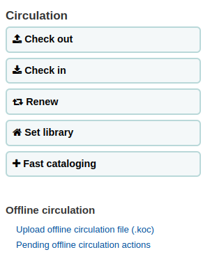
Get there: Circulation > Pending offline circulation actions
Once all of the logs from all of the circulation computers are loaded you will be able to check them all or select just those you want to process into Koha.
Click on the Process button and Koha will record every stored transaction one by one. For each transaction, the status will change to:
“Success.” if the transaction was processed correctly
“Borrower not found.” if the borrower card number is incorrect
“Item not found.” if the item barcode is wrong
“Item not issued.” if you checked in an available item
Once finished you will have a summary of all of your transactions
Apply directly
If you performed all of the circulation actions on one computer then everything is sorted already so you can choose to “Apply directly”
The status column will be updated to let you know if the transactions were applied
“Success.” if the transaction was processed correctly
“Borrower not found.” if the borrower card number is incorrect
“Item not found.” if the item barcode is wrong
“Item not issued.” if you checked in an available item
Offline circ tool for Windows
The Offline circulation utility can be downloaded at: https://github.com/bywatersolutions/koha-offline-circulation/releases
To generate a borrowers.db file for loading in to the Windows tool you will need to run the file generator via a cron job.
Upload offline circ file
The offline circulation tool for Windows will generate a KOC file that you can upload into Koha once your system comes back up.
On the Circulation menu click ‘Upload offline circulation file (.koc)’
Browse your computer for the *.koc file

Once the file is uploaded, click the process the file

When this is complete you’ll be able to upload another file or tend to pending offline circulation actions.
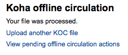
After clicking ‘View pending offline circulation actions’ you will be brought to a summary of all of the actions you loaded in to Koha in your *.koc file.
Once all of the logs from all of the circulation computers are loaded you will be able to check them all or select just those you want to process into Koha.
Click on the Process button and Koha will record every stored transaction one by one. For each transaction, the status will change to:
“Success.” if the transaction was processed correctly
“Borrower not found.” if the borrower card number is incorrect
“Item not found.” if the item barcode is wrong
“Item not issued.” if you checked in an available item
Once finished you will have a summary of all of your transactions